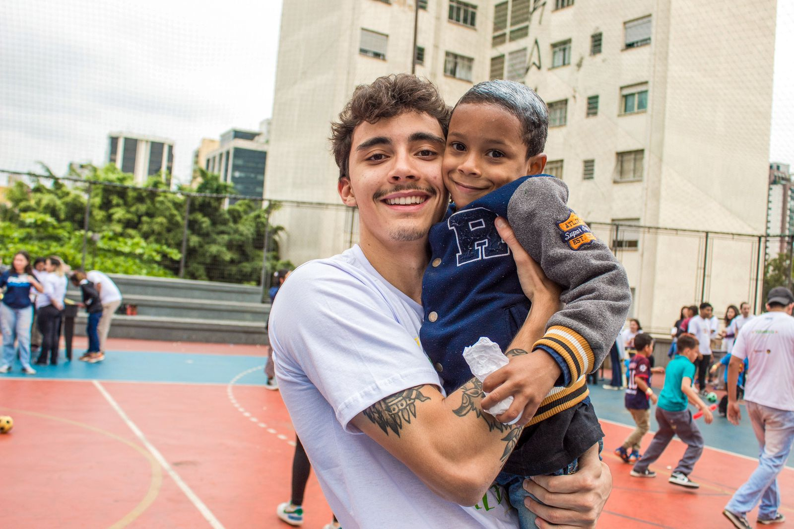
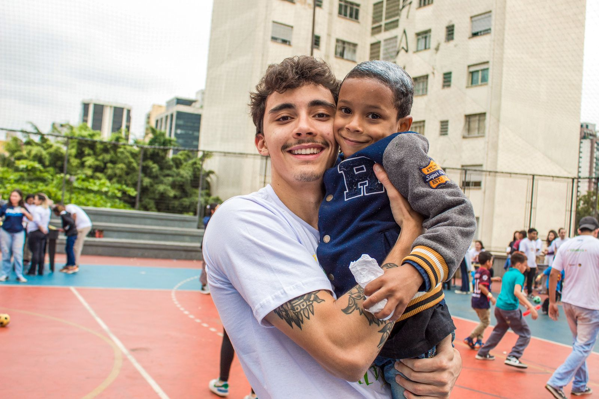

Presidente

Victor
Entrou na FECAP Social em 2021, como auxiliar financeiro, responsável por orçamentos. Se tornou líder do time em abril de 2023 e presidente em janeiro de 2024
Comunicação
O time de Comunicação é responsável por desenvolver e produzir os conteúdos divulgados pela FECAP Social, além de realizar a gestão das mídias sociais e preservar a nossa identidade visual.
Taty
Líder de Comunicação
Entrou na FECAP Social em 2022, como criadora de conteúdo, e se tornou líder do time em janeiro de 2024
Faz a gestão de mídias sociais da FECAP Social
Jacque
Artes
Cria artes e vídeos para postagens no Instagram e LinkedIn, sejam elas no Feed ou nos Stories
Winnie
Redação
Cria legendas e textos para as postagens e divulgações.
Gabi
Artes e Mídias
Cria artes e vídeos para postagens no Instagram e LinkedIn, sejam elas no Feed ou nos Stories e faz gestão das mídias sociais da Fecap Social
Financeiro
O time do Financeiro é responsável pelo nosso fluxo de caixa, cuidar e controlar o nosso orçamento, realizar cotações e tomar decisões financeiras sobre os nossos gastos

Mari
Líder do Financeiro
Entrou na FECAP Social em 2022, como auxiliar financeiro, e se tornou líder do time em janeiro de 2024
Realiza o registro e envio das horas complementares fornecidas nas ações; cotação e contratação dos serviços necessários na realização das ações; controle do estoque da entidade.
Isabelle
Fluxo de caixa e Orçamentos
Controla e atualiza o caixa financeiro da entidade; realiza cotação e contratação dos serviços necessários na realização das ações

Okochi
Reembolsos e Orçamentos
Controla e atualiza a condição de reembolsos solicitados; realiza cotação e contrata serviços necessários para realização das ações.
Projetos
O time de Projetos é responsável pelo desenvolvimento e estruturação das nossas ações fixas e esporádicas, bem como captação de parceiras e arrecadações.
Raquel
Líder de Projetos
Entrou na FECAP Social em 2022, responsável pela comunicação com ONGs, e se tornou líder do time em janeiro de 2024
Faz a gestão de mídias sociais da FECAP Social

Gus
Panejamento
Cria, organiza e planeja ações novas e em andamento.

Isadora
Documentos
Atualiza e controla o calendário de Projetos, criação e gestão de e-mails, formulários, atas de reuniões e documentos descritivos das ações
Ther
Parcerias
Pesquisa e entra em contato com as ONGs, empresas, coletivos da FECAP e de outras instituições

Lari
Planejamento
Cria, organiza e planeja ações novas e em andamento.

Duda
Parcerias
Pesquisa e entra em contato com as ONGs, empresas, coletivos da FECAP e de outras instituições